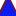

<!doctype html>
<html lang="en">
    <head>
        <meta charset="utf-8">
        <meta http-equiv="X-UA-Compatible" content="IE=edge">
        <meta name="viewport" content="initial-scale=1,user-scalable=no,maximum-scale=1,width=device-width">
        <meta name="mobile-web-app-capable" content="yes">
        <meta name="apple-mobile-web-app-capable" content="yes">
        <link rel="stylesheet" href="css/leaflet.css"><link rel="stylesheet" href="css/L.Control.Locate.min.css">
        <link rel="stylesheet" href="css/qgis2web.css"><link rel="stylesheet" href="css/fontawesome-all.min.css">
        <link rel="stylesheet" href="css/MarkerCluster.css">
        <link rel="stylesheet" href="css/MarkerCluster.Default.css">
        <link rel="stylesheet" href="css/filter.css">
<link rel="stylesheet" href="css/nouislider.min.css">
        <link rel="stylesheet" href="css/leaflet-control-geocoder.Geocoder.css">
        <link rel="stylesheet" href="css/leaflet-measure.css">
        <style>
        html, body, #map {
            width: 100%;
            height: 100%;
            padding: 0;
            margin: 0;
        }
        </style>
        <title>Interactive Web Map of Water Meter Locations of ACK St. Edmund Church Borehole</title>
    </head>
    <body>
        <div id="map">
        </div>
        <script src="js/qgis2web_expressions.js"></script>
        <script src="js/leaflet.js"></script><script src="js/L.Control.Locate.min.js"></script>
        <script src="js/leaflet-svg-shape-markers.min.js"></script>
        <script src="js/leaflet.rotatedMarker.js"></script>
        <script src="js/leaflet.pattern.js"></script>
        <script src="js/leaflet-hash.js"></script>
        <script src="js/Autolinker.min.js"></script>
        <script src="js/rbush.min.js"></script>
        <script src="js/labelgun.min.js"></script>
        <script src="js/labels.js"></script>
        <script src="js/leaflet-control-geocoder.Geocoder.js"></script>
        <script src="js/leaflet-measure.js"></script>
        <script src="js/leaflet.markercluster.js"></script>
        <script src="js/tailDT.js"></script>
<script src="js/nouislider.min.js"></script>
<script src="js/wNumb.js"></script>
        <script src="data/WATERMETERS_2.js"></script>
        <script src="data/ACKWATERBOREHOLE_3.js"></script>
        <script>
        var highlightLayer;
        function highlightFeature(e) {
            highlightLayer = e.target;

            if (e.target.feature.geometry.type === 'LineString') {
              highlightLayer.setStyle({
                color: '#4000ff',
              });
            } else {
              highlightLayer.setStyle({
                fillColor: '#4000ff',
                fillOpacity: 1
              });
            }
            highlightLayer.openPopup();
        }
        var map = L.map('map', {
            zoomControl:true, maxZoom:28, minZoom:1
        }).fitBounds([[-1.2693018099999998,36.957578854088744],[-1.2583057899999999,36.97504004591125]]);
        var hash = new L.Hash(map);
        map.attributionControl.setPrefix('<a href="https://github.com/tomchadwin/qgis2web" target="_blank">qgis2web</a> &middot; <a href="https://leafletjs.com" title="A JS library for interactive maps">Leaflet</a> &middot; <a href="https://qgis.org">QGIS</a>');
        var autolinker = new Autolinker({truncate: {length: 30, location: 'smart'}});
        function removeEmptyRowsFromPopupContent(content, feature) {
         var tempDiv = document.createElement('div');
         tempDiv.innerHTML = content;
         var rows = tempDiv.querySelectorAll('tr');
         for (var i = 0; i < rows.length; i++) {
             var td = rows[i].querySelector('td.visible-with-data');
             var key = td ? td.id : '';
             if (td && td.classList.contains('visible-with-data') && feature.properties[key] == null) {
                 rows[i].parentNode.removeChild(rows[i]);
             }
         }
         return tempDiv.innerHTML;
        }
        document.querySelector(".leaflet-popup-pane").addEventListener("load", function(event) {
          var tagName = event.target.tagName,
            popup = map._popup;
          // Also check if flag is already set.
          if (tagName === "IMG" && popup && !popup._updated) {
            popup._updated = true; // Set flag to prevent looping.
            popup.update();
          }
        }, true);
        L.control.locate({locateOptions: {maxZoom: 19}}).addTo(map);
        var measureControl = new L.Control.Measure({
            position: 'topleft',
            primaryLengthUnit: 'meters',
            secondaryLengthUnit: 'kilometers',
            primaryAreaUnit: 'sqmeters',
            secondaryAreaUnit: 'hectares'
        });
        measureControl.addTo(map);
        document.getElementsByClassName('leaflet-control-measure-toggle')[0]
        .innerHTML = '';
        document.getElementsByClassName('leaflet-control-measure-toggle')[0]
        .className += ' fas fa-ruler';
        var bounds_group = new L.featureGroup([]);
        function setBounds() {
        }
        map.createPane('pane_Positronnolabelsretina_0');
        map.getPane('pane_Positronnolabelsretina_0').style.zIndex = 400;
        var layer_Positronnolabelsretina_0 = L.tileLayer('https://a.basemaps.cartocdn.com/light_nolabels/{z}/{x}/{y}@2x.png', {
            pane: 'pane_Positronnolabelsretina_0',
            opacity: 1.0,
            attribution: '<a href="https://cartodb.com/basemaps/">Map tiles by CartoDB, under CC BY 3.0. Data by OpenStreetMap, under ODbL.</a>',
            minZoom: 1,
            maxZoom: 28,
            minNativeZoom: 0,
            maxNativeZoom: 20
        });
        layer_Positronnolabelsretina_0;
        map.addLayer(layer_Positronnolabelsretina_0);
        map.createPane('pane_GoogleRoad_1');
        map.getPane('pane_GoogleRoad_1').style.zIndex = 401;
        var layer_GoogleRoad_1 = L.tileLayer('https://mt1.google.com/vt/lyrs=m&x={x}&y={y}&z={z}', {
            pane: 'pane_GoogleRoad_1',
            opacity: 1.0,
            attribution: '<a href="https://www.google.at/permissions/geoguidelines/attr-guide.html">Map data ©2015 Google</a>',
            minZoom: 1,
            maxZoom: 28,
            minNativeZoom: 0,
            maxNativeZoom: 20
        });
        layer_GoogleRoad_1;
        map.addLayer(layer_GoogleRoad_1);
        function pop_WATERMETERS_2(feature, layer) {
            layer.on({
                mouseout: function(e) {
                    for (i in e.target._eventParents) {
                        e.target._eventParents[i].resetStyle(e.target);
                    }
                    if (typeof layer.closePopup == 'function') {
                        layer.closePopup();
                    } else {
                        layer.eachLayer(function(feature){
                            feature.closePopup()
                        });
                    }
                },
                mouseover: highlightFeature,
            });
            var popupContent = '<table>\
                    <tr>\
                        <th scope="row">NAME_</th>\
                        <td>' + (feature.properties['NAME_'] !== null ? autolinker.link(feature.properties['NAME_'].toLocaleString()) : '') + '</td>\
                    </tr>\
                    <tr>\
                        <th scope="row">GPS COORDI</th>\
                        <td>' + (feature.properties['GPS COORDI'] !== null ? autolinker.link(feature.properties['GPS COORDI'].toLocaleString()) : '') + '</td>\
                    </tr>\
                    <tr>\
                        <th scope="row">LATITUDE_</th>\
                        <td>' + (feature.properties['LATITUDE_'] !== null ? autolinker.link(feature.properties['LATITUDE_'].toLocaleString()) : '') + '</td>\
                    </tr>\
                    <tr>\
                        <th scope="row">LONGITUDE_</th>\
                        <td>' + (feature.properties['LONGITUDE_'] !== null ? autolinker.link(feature.properties['LONGITUDE_'].toLocaleString()) : '') + '</td>\
                    </tr>\
                    <tr>\
                        <th scope="row">ALTITUDE_</th>\
                        <td>' + (feature.properties['ALTITUDE_'] !== null ? autolinker.link(feature.properties['ALTITUDE_'].toLocaleString()) : '') + '</td>\
                    </tr>\
                    <tr>\
                        <th scope="row">METER NUMB</th>\
                        <td>' + (feature.properties['METER NUMB'] !== null ? autolinker.link(feature.properties['METER NUMB'].toLocaleString()) : '') + '</td>\
                    </tr>\
                    <tr>\
                        <th scope="row">STATUS_</th>\
                        <td>' + (feature.properties['STATUS_'] !== null ? autolinker.link(feature.properties['STATUS_'].toLocaleString()) : '') + '</td>\
                    </tr>\
                    <tr>\
                        <th scope="row">MAINTAINAN</th>\
                        <td>' + (feature.properties['MAINTAINAN'] !== null ? autolinker.link(feature.properties['MAINTAINAN'].toLocaleString()) : '') + '</td>\
                    </tr>\
                </table>';
            layer.bindPopup(popupContent, {maxHeight: 400});
            var popup = layer.getPopup();
            var content = popup.getContent();
            var updatedContent = removeEmptyRowsFromPopupContent(content, feature);
            popup.setContent(updatedContent);
        }

        function style_WATERMETERS_2_0(feature) {
            switch(String(feature.properties['STATUS_'])) {
                case 'ACTIVE':
                    return {
                pane: 'pane_WATERMETERS_2',
                radius: 12.000000000000002,
                opacity: 1,
                color: 'rgba(35,35,35,1.0)',
                dashArray: '',
                lineCap: 'butt',
                lineJoin: 'miter',
                weight: 1,
                fill: true,
                fillOpacity: 1,
                fillColor: 'rgba(10,236,80,1.0)',
                interactive: true,
            }
                    break;
                case 'NOT ACTIVE':
                    return {
                pane: 'pane_WATERMETERS_2',
                radius: 12.000000000000002,
                opacity: 1,
                color: 'rgba(35,35,35,1.0)',
                dashArray: '',
                lineCap: 'butt',
                lineJoin: 'miter',
                weight: 1,
                fill: true,
                fillOpacity: 1,
                fillColor: 'rgba(249,2,1,1.0)',
                interactive: true,
            }
                    break;
            }
        }
        map.createPane('pane_WATERMETERS_2');
        map.getPane('pane_WATERMETERS_2').style.zIndex = 402;
        map.getPane('pane_WATERMETERS_2').style['mix-blend-mode'] = 'normal';
        var layer_WATERMETERS_2 = new L.geoJson(json_WATERMETERS_2, {
            attribution: '',
            interactive: true,
            dataVar: 'json_WATERMETERS_2',
            layerName: 'layer_WATERMETERS_2',
            pane: 'pane_WATERMETERS_2',
            onEachFeature: pop_WATERMETERS_2,
            pointToLayer: function (feature, latlng) {
                var context = {
                    feature: feature,
                    variables: {}
                };
                return L.circleMarker(latlng, style_WATERMETERS_2_0(feature));
            },
        });
        var cluster_WATERMETERS_2 = new L.MarkerClusterGroup({showCoverageOnHover: false,
            spiderfyDistanceMultiplier: 2});
        cluster_WATERMETERS_2.addLayer(layer_WATERMETERS_2);

        bounds_group.addLayer(layer_WATERMETERS_2);
        cluster_WATERMETERS_2.addTo(map);
        function pop_ACKWATERBOREHOLE_3(feature, layer) {
            layer.on({
                mouseout: function(e) {
                    for (i in e.target._eventParents) {
                        e.target._eventParents[i].resetStyle(e.target);
                    }
                    if (typeof layer.closePopup == 'function') {
                        layer.closePopup();
                    } else {
                        layer.eachLayer(function(feature){
                            feature.closePopup()
                        });
                    }
                },
                mouseover: highlightFeature,
            });
            var popupContent = '<table>\
                    <tr>\
                        <th scope="row">BOREHOLE N</th>\
                        <td>' + (feature.properties['BOREHOLE N'] !== null ? autolinker.link(feature.properties['BOREHOLE N'].toLocaleString()) : '') + '</td>\
                    </tr>\
                    <tr>\
                        <th scope="row">BOREHOLE G</th>\
                        <td>' + (feature.properties['BOREHOLE G'] !== null ? autolinker.link(feature.properties['BOREHOLE G'].toLocaleString()) : '') + '</td>\
                    </tr>\
                    <tr>\
                        <th scope="row">LATITUDE_</th>\
                        <td>' + (feature.properties['LATITUDE_'] !== null ? autolinker.link(feature.properties['LATITUDE_'].toLocaleString()) : '') + '</td>\
                    </tr>\
                    <tr>\
                        <th scope="row">LONGITUDE_</th>\
                        <td>' + (feature.properties['LONGITUDE_'] !== null ? autolinker.link(feature.properties['LONGITUDE_'].toLocaleString()) : '') + '</td>\
                    </tr>\
                    <tr>\
                        <th scope="row">ALTITUDE_</th>\
                        <td>' + (feature.properties['ALTITUDE_'] !== null ? autolinker.link(feature.properties['ALTITUDE_'].toLocaleString()) : '') + '</td>\
                    </tr>\
                    <tr>\
                        <th scope="row">PRECISION_</th>\
                        <td>' + (feature.properties['PRECISION_'] !== null ? autolinker.link(feature.properties['PRECISION_'].toLocaleString()) : '') + '</td>\
                    </tr>\
                    <tr>\
                        <th scope="row">BOREHOLE D</th>\
                        <td>' + (feature.properties['BOREHOLE D'] !== null ? autolinker.link(feature.properties['BOREHOLE D'].toLocaleString()) : '') + '</td>\
                    </tr>\
                    <tr>\
                        <th scope="row">BOREHOLE C</th>\
                        <td>' + (feature.properties['BOREHOLE C'] !== null ? autolinker.link(feature.properties['BOREHOLE C'].toLocaleString()) : '') + '</td>\
                    </tr>\
                    <tr>\
                        <th scope="row">MAINTENANC</th>\
                        <td>' + (feature.properties['MAINTENANC'] !== null ? autolinker.link(feature.properties['MAINTENANC'].toLocaleString()) : '') + '</td>\
                    </tr>\
                </table>';
            layer.bindPopup(popupContent, {maxHeight: 400});
            var popup = layer.getPopup();
            var content = popup.getContent();
            var updatedContent = removeEmptyRowsFromPopupContent(content, feature);
            popup.setContent(updatedContent);
        }

        function style_ACKWATERBOREHOLE_3_0() {
            return {
                pane: 'pane_ACKWATERBOREHOLE_3',
                shape: 'triangle',
                radius: 12.8,
                opacity: 1,
                color: 'rgba(128,17,25,1.0)',
                dashArray: '',
                lineCap: 'butt',
                lineJoin: 'miter',
                weight: 2.0,
                fill: true,
                fillOpacity: 1,
                fillColor: 'rgba(13,28,239,1.0)',
                interactive: true,
            }
        }
        map.createPane('pane_ACKWATERBOREHOLE_3');
        map.getPane('pane_ACKWATERBOREHOLE_3').style.zIndex = 403;
        map.getPane('pane_ACKWATERBOREHOLE_3').style['mix-blend-mode'] = 'normal';
        var layer_ACKWATERBOREHOLE_3 = new L.geoJson(json_ACKWATERBOREHOLE_3, {
            attribution: '',
            interactive: true,
            dataVar: 'json_ACKWATERBOREHOLE_3',
            layerName: 'layer_ACKWATERBOREHOLE_3',
            pane: 'pane_ACKWATERBOREHOLE_3',
            onEachFeature: pop_ACKWATERBOREHOLE_3,
            pointToLayer: function (feature, latlng) {
                var context = {
                    feature: feature,
                    variables: {}
                };
                return L.shapeMarker(latlng, style_ACKWATERBOREHOLE_3_0(feature));
            },
        });
        bounds_group.addLayer(layer_ACKWATERBOREHOLE_3);
        map.addLayer(layer_ACKWATERBOREHOLE_3);
            var title = new L.Control();
            title.onAdd = function (map) {
                this._div = L.DomUtil.create('div', 'info');
                this.update();
                return this._div;
            };
            title.update = function () {
                this._div.innerHTML = '<h2>Interactive Web Map of Water Meter Locations of ACK St. Edmund Church Borehole</h2>';
            };
            title.addTo(map);
            var abstract = new L.Control({'position':'bottomright'});
            abstract.onAdd = function (map) {
                this._div = L.DomUtil.create('div',
                'leaflet-control abstract');
                this._div.id = 'abstract'

                    abstract.show();
                    return this._div;
                };
                abstract.show = function () {
                    this._div.classList.remove("abstract");
                    this._div.classList.add("abstractUncollapsed");
                    this._div.innerHTML = 'This is a web map designed to show water meter locations of ACK St. Edmund Church Borehole in Mihang\'o by Abigael Wambui Kuria.';
            };
            abstract.addTo(map);
        var osmGeocoder = new L.Control.Geocoder({
            collapsed: true,
            position: 'topleft',
            text: 'Search',
            title: 'Testing'
        }).addTo(map);
        document.getElementsByClassName('leaflet-control-geocoder-icon')[0]
        .className += ' fa fa-search';
        document.getElementsByClassName('leaflet-control-geocoder-icon')[0]
        .title += 'Search for a place';
        var baseMaps = {};
        L.control.layers(baseMaps,{' ACK WATER BOREHOLE': layer_ACKWATERBOREHOLE_3,'WATER METERS <br /><table><tr><td style="text-align: center;"></td><td>ACTIVE</td></tr><tr><td style="text-align: center;"></td><td>NOT ACTIVE</td></tr></table>': cluster_WATERMETERS_2,"Google Road": layer_GoogleRoad_1,"Positron [no labels] (retina)": layer_Positronnolabelsretina_0,},{collapsed:false}).addTo(map);
        setBounds();
        var i = 0;
        layer_WATERMETERS_2.eachLayer(function(layer) {
            var context = {
                feature: layer.feature,
                variables: {}
            };
            layer.bindTooltip((layer.feature.properties['METER NUMB'] !== null?String('<div style="color: #000000; font-size: 10pt; font-weight: bold; font-family: \'Century Gothic\', sans-serif;">' + layer.feature.properties['METER NUMB']) + '</div>':''), {permanent: true, offset: [-0, -16], className: 'css_WATERMETERS_2'});
            labels.push(layer);
            totalMarkers += 1;
              layer.added = true;
              addLabel(layer, i);
              i++;
        });
        var mapDiv = document.getElementById('map');
        var row = document.createElement('div');
        row.className="row";
        row.id="all";
        row.style.height = "100%";
        var col1 = document.createElement('div');
        col1.className="col9";
        col1.id = "mapWindow";
        col1.style.height = "99%";
        col1.style.width = "80%";
        col1.style.display = "inline-block";
        var col2 = document.createElement('div');
        col2.className="col3";
        col2.id = "menu";
        col2.style.display = "inline-block";
        mapDiv.parentNode.insertBefore(row, mapDiv);
        document.getElementById("all").appendChild(col1);
        document.getElementById("all").appendChild(col2);
        col1.appendChild(mapDiv)
        var Filters = {"METER NUMB": "int","STATUS_": "str"};
        function filterFunc() {
          map.eachLayer(function(lyr){
          if ("options" in lyr && "dataVar" in lyr["options"]){
            features = this[lyr["options"]["dataVar"]].features.slice(0);
            try{
              for (key in Filters){
                keyS = key.replace(/[^a-zA-Z0-9_]/g, "")
                if (Filters[key] == "str" || Filters[key] == "bool"){
                  var selection = [];
                  var options = document.getElementById("sel_" + keyS).options
                  for (var i=0; i < options.length; i++) {
                    if (options[i].selected) selection.push(options[i].value);
                  }
                    try{
                      if (key in features[0].properties){
                        for (i = features.length - 1;
                          i >= 0; --i){
                          if (selection.indexOf(
                          features[i].properties[key])<0
                          && selection.length>0) {
                          features.splice(i,1);
                          }
                        }
                      }
                    } catch(err){
                  }
                }
                if (Filters[key] == "int"){
                  sliderVals =  document.getElementById(
                    "div_" + keyS).noUiSlider.get();
                  try{
                    if (key in features[0].properties){
                    for (i = features.length - 1; i >= 0; --i){
                      if (parseInt(features[i].properties[key])
                          < sliderVals[0]
                          || parseInt(features[i].properties[key])
                          > sliderVals[1]){
                            features.splice(i,1);
                          }
                        }
                      }
                    } catch(err){
                    }
                  }
                if (Filters[key] == "real"){
                  sliderVals =  document.getElementById(
                    "div_" + keyS).noUiSlider.get();
                  try{
                    if (key in features[0].properties){
                    for (i = features.length - 1; i >= 0; --i){
                      if (features[i].properties[key]
                          < sliderVals[0]
                          || features[i].properties[key]
                          > sliderVals[1]){
                            features.splice(i,1);
                          }
                        }
                      }
                    } catch(err){
                    }
                  }
                if (Filters[key] == "date"
                  || Filters[key] == "datetime"
                  || Filters[key] == "time"){
                  try{
                    if (key in features[0].properties){
                      HTMLkey = key.replace(/[&\/\\#,+()$~%.'":*?<>{} ]/g, '');
                      startdate = document.getElementById("dat_" +
                        HTMLkey + "_date1").value.replace(" ", "T");
                      enddate = document.getElementById("dat_" +
                        HTMLkey + "_date2").value.replace(" ", "T");
                      for (i = features.length - 1; i >= 0; --i){
                        if (features[i].properties[key] < startdate
                          || features[i].properties[key] > enddate){
                          features.splice(i,1);
                        }
                      }
                    }
                  } catch(err){
                  }
                }
              }
            } catch(err){
            }
          this[lyr["options"]["layerName"]].clearLayers();
          this[lyr["options"]["layerName"]].addData(features);
        var i = 0;
        layer_WATERMETERS_2.eachLayer(function(layer) {
            var context = {
                feature: layer.feature,
                variables: {}
            };
            layer.bindTooltip((layer.feature.properties['METER NUMB'] !== null?String('<div style="color: #000000; font-size: 10pt; font-weight: bold; font-family: \'Century Gothic\', sans-serif;">' + layer.feature.properties['METER NUMB']) + '</div>':''), {permanent: true, offset: [-0, -16], className: 'css_WATERMETERS_2'});
            labels.push(layer);
            totalMarkers += 1;
              layer.added = true;
              addLabel(layer, i);
              i++;
        });
          }
          })
        }
            document.getElementById("menu").appendChild(
                document.createElement("div"));
            var div_METERNUMB = document.createElement("div");
            div_METERNUMB.id = "div_METERNUMB";
            div_METERNUMB.className = "slider";
            document.getElementById("menu").appendChild(div_METERNUMB);
            var lab_METERNUMB = document.createElement('div');
            lab_METERNUMB.innerHTML  = 'METER NUMB: <span id="val_METERNUMB"></span>';
            lab_METERNUMB.className = 'filterlabel';
            document.getElementById("menu").appendChild(lab_METERNUMB);
            var reset_METERNUMB = document.createElement('div');
            reset_METERNUMB.innerHTML = 'clear filter';
            reset_METERNUMB.className = 'filterlabel';
            lab_METERNUMB.className = 'filterlabel';
            reset_METERNUMB.onclick = function() {
                sel_METERNUMB.noUiSlider.reset();
            };
            document.getElementById("menu").appendChild(reset_METERNUMB);
            var sel_METERNUMB = document.getElementById('div_METERNUMB');
            noUiSlider.create(sel_METERNUMB, {
                connect: true,
                start: [1, 244],
                step: 1,
                format: wNumb({
                    decimals: 0,
                    }),
                range: {
                min: 1,
                max: 244
                }
            });
            sel_METERNUMB.noUiSlider.on('update', function (values) {
            filterVals =[];
            for (value in values){
            filterVals.push(parseInt(value))
            }
            val_METERNUMB = document.getElementById('val_METERNUMB');
            val_METERNUMB.innerHTML = values.join(' - ');
                filterFunc()
            });
            document.getElementById("menu").appendChild(
                document.createElement("div"));
            var div_STATUS_ = document.createElement('div');
            div_STATUS_.id = "div_STATUS_";
            div_STATUS_.className= "filterselect";
            document.getElementById("menu").appendChild(div_STATUS_);
            sel_STATUS_ = document.createElement('select');
            sel_STATUS_.multiple = true;
            sel_STATUS_.size = 2;
            sel_STATUS_.id = "sel_STATUS_";
            var STATUS__options_str = "<option value='' unselected></option>";
            sel_STATUS_.onchange = function(){filterFunc()};
            STATUS__options_str  += '<option value="ACTIVE">ACTIVE</option>';
            STATUS__options_str  += '<option value="NOT ACTIVE">NOT ACTIVE</option>';
            sel_STATUS_.innerHTML = STATUS__options_str;
            div_STATUS_.appendChild(sel_STATUS_);
            var lab_STATUS_ = document.createElement('div');
            lab_STATUS_.innerHTML = 'STATUS_';
            lab_STATUS_.className = 'filterlabel';
            div_STATUS_.appendChild(lab_STATUS_);
            var reset_STATUS_ = document.createElement('div');
            reset_STATUS_.innerHTML = 'clear filter';
            reset_STATUS_.className = 'filterlabel';
            reset_STATUS_.onclick = function() {
                var options = document.getElementById("sel_STATUS_").options;
                for (var i=0; i < options.length; i++) {
                    options[i].selected = false;
                }
                filterFunc();
            };
            div_STATUS_.appendChild(reset_STATUS_);
        resetLabels([layer_WATERMETERS_2]);
        map.on("zoomend", function(){
            resetLabels([layer_WATERMETERS_2]);
        });
        map.on("layeradd", function(){
            resetLabels([layer_WATERMETERS_2]);
        });
        map.on("layerremove", function(){
            resetLabels([layer_WATERMETERS_2]);
        });
        </script>
    </body>
</html>
